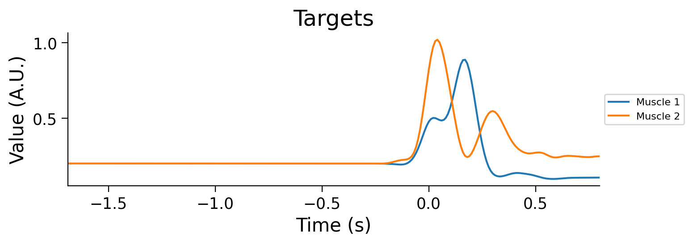
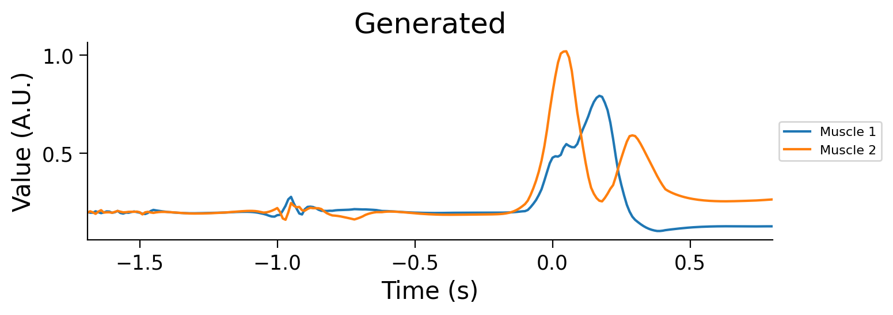
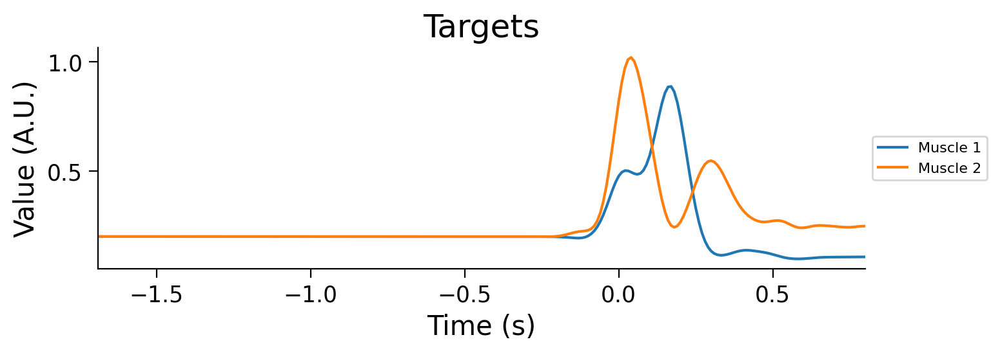
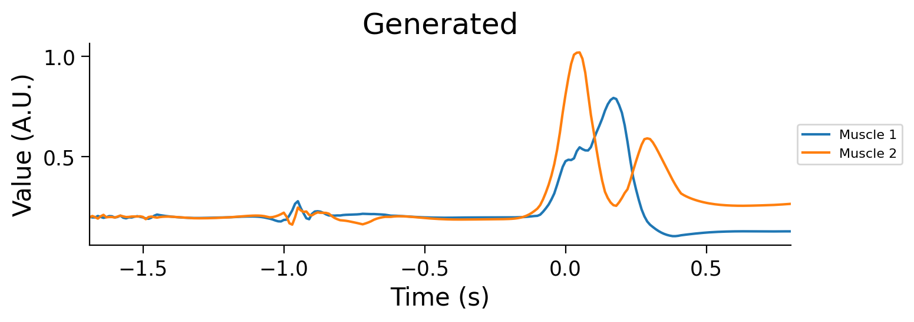
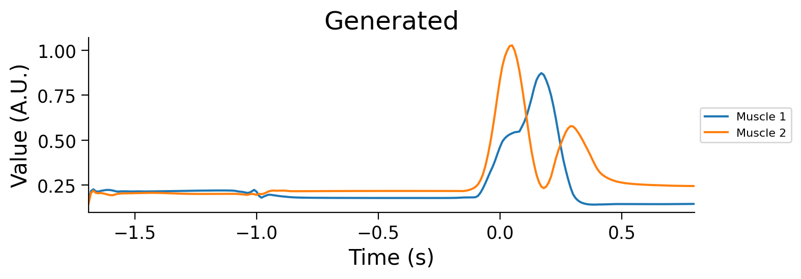

Tutorial 2: Generalization in Neuroscience#
Week 1, Day 1: Generalization
By Neuromatch Academy
Content creators: Samuele Bolotta, Patrick Mineault and Shreya Saxena
Content reviewers: Samuele Bolotta, Lily Chamakura, RyeongKyung Yoon, Yizhou Chen, Ruiyi Zhang, Aakash Agrawal, Alish Dipani, Hossein Rezaei, Yousef Ghanbari, Mostafa Abdollahi
Production editors: Konstantine Tsafatinos, Ella Batty, Spiros Chavlis, Samuele Bolotta, Hlib Solodzhuk
Tutorial Objectives#
Estimated timing of tutorial: [insert estimated duration of the whole tutorial in minutes]
This tutorial will introduce you to generalization in neuroscience. We’ll look at a classic neuroscience paper, Sussillo et al. (2015), that compares how artificial and biological neural networks solve different motor tasks. This paper looks at how linear arm movements are generated in motor cortex; later extensions of these ideas (e.g. Codol et al. 2024; Almani et al. 2024) address how more complex skilled movements, including handwriting, can be generated, continuing our theme for today’s tutorials. We’ll look at a popular AI-derived framework for understanding how the brain solves tasks: task-driven neural networks.
Our learning goals for this tutorial are as follows:
Understand core goals in neuroscience. Examine the fundamental questions that drive neuroscience research, such as the ‘What’, ‘How’, and ‘Why’ behind neurological functions and behaviors.
Conceptualize generalization in neuroscience. Gain insights into what generalization entails within the field of neuroscience, understanding how principles of neural generalization can inform and be informed by artificial intelligence.
Evaluate the impact of architectural choices. Discuss how different architectural decisions and the selection of priors in model design can introduce inductive biases, affecting the generalization capabilities of both neural and artificial systems.
Illustrate robustness in noisy environments. Identify and describe real-world instances where the pursuit of robustness against noise has led to converging strategies in both neuroscience and artificial intelligence.
Setup#
Install and import feedback gadget#
Install and import feedback gadget#
Show code cell source
# @title Install and import feedback gadget
!pip install numpy scipy matplotlib torch tqdm vibecheck --quiet
from vibecheck import DatatopsContentReviewContainer
def content_review(notebook_section: str):
return DatatopsContentReviewContainer(
"", # No text prompt - leave this as is
notebook_section,
{
"url": "https://pmyvdlilci.execute-api.us-east-1.amazonaws.com/klab",
"name": "sciencematch_sm", # change the name of the course : neuromatch_dl, climatematch_ct, etc
"user_key": "y1x3mpx5",
},
).render()
feedback_prefix = "W1D1_T2"
Import dependencies#
Figure Settings#
Figure settings#
Show code cell source
# @title Figure settings
logging.getLogger('matplotlib.font_manager').disabled = True
%matplotlib inline
%config InlineBackend.figure_format = 'retina' # perform high definition rendering for images and plots
plt.style.use("https://raw.githubusercontent.com/NeuromatchAcademy/course-content/main/nma.mplstyle")
Plotting Functions#
Plotting functions#
Show code cell source
# @title Plotting functions
xlim = (-1.8, .7)
def plot_inputs_over_time(timesteps, avg_inputs, title='Inputs over Time'):
"""
Plot the inputs over time.
Inputs:
- timesteps (list or array-like): A sequence of time steps at which the inputs were recorded.
This acts as the x-axis in the plot, representing the progression of time.
- avg_inputs (list or array-like): The average values of inputs corresponding to each time step.
These values are plotted on the y-axis, showing the magnitude of inputs over time.
- title (string): The title of the plot
Returns:
This function generates and displays a plot using Matplotlib.
"""
plt.figure(figsize=(8, 3))
num_features = avg_inputs.shape[1] if hasattr(avg_inputs, 'shape') else len(avg_inputs[0])
for feature_idx in range(num_features):
current_feature_values = avg_inputs[:, feature_idx] if hasattr(avg_inputs, 'shape') else [row[feature_idx] for row in avg_inputs]
label = f'Feature {feature_idx + 1}' if feature_idx < num_features - 1 else 'Go Cue'
plt.plot(timesteps, current_feature_values, label=label)
plt.title(title)
plt.xlabel('Time (s)')
plt.ylabel('Value (A.U.)')
plt.subplots_adjust(right=0.7)
plt.legend(loc='center left', bbox_to_anchor=(1, 0.5), fontsize=8)
plt.tight_layout()
plt.xlim(min(timesteps), max(timesteps))
plt.show()
def plot_muscles_over_time(timesteps, avg_output, title='Muscles over Time'):
"""
Plot the average outputs over time for two muscles to visualize changes in output values.
The avg_output is expected to be a 250x2 array where each column corresponds to a different muscle.
Inputs:
- timesteps (list or array-like): A sequence of time steps at which the outputs were recorded.
This acts as the x-axis in the plot, representing the progression of time.
- avg_output (array-like, shape [250, 2]): The average values of outputs, with each column
representing the output over time for each muscle.
- title (string): The title of the plot
Returns:
This function generates and displays a plot using Matplotlib.
"""
plt.figure(figsize=(8, 3)) # Set the figure size
plt.plot(timesteps, avg_output[:, 0], label='Muscle 1') # Plot for muscle 1
plt.plot(timesteps, avg_output[:, 1], label='Muscle 2') # Plot for muscle 2
plt.title(title)
plt.xlabel('Time (s)')
plt.ylabel('Value (A.U.)')
# Adjust plot margins to provide space for the legend outside the plot
plt.subplots_adjust(right=0.7)
plt.legend(loc='center left', bbox_to_anchor=(1, 0.5), fontsize=8) # Placing legend outside
plt.tight_layout()
plt.xlim(min(timesteps), max(timesteps)) # Ensuring x-axis covers the range of timesteps
plt.show()
def plot_training_validation_losses(epoch_losses, val_losses, actual_num_epochs, title):
"""
This function plots the training and validation losses over epochs.
Inputs:
- epoch_losses (list of float): List containing the training loss for each epoch. Each element is a float
representing the loss calculated after each epoch of training.
- val_losses (list of float): List containing the validation loss for each epoch. Similar to `epoch_losses`, but
for the validation set, allowing for the comparison between training and validation performance.
- actual_num_epochs (int): The actual number of epochs the training went through. This could be different from
the initially set number of epochs if early stopping was employed. It determines the range of the x-axis
in the plot.
- title (str): A string that sets the title of the plot. This allows for customization of the plot for better
readability and interpretation.
Outputs:
This function generates and displays a plot using matplotlib.
"""
plt.figure(figsize=(8, 4))
plt.plot(range(1, actual_num_epochs + 1), epoch_losses, label='Training Loss')
plt.plot(range(1, actual_num_epochs + 1), val_losses, label='Validation Loss')
plt.xlabel('Epoch')
plt.ylabel('Loss')
plt.title(title)
plt.legend()
plt.xlim(xlim)
plt.show()
# Plot hidden units in UnregularizedRNN
def plot_hidden_unit_activations(hidden_states, times, neurons_to_plot=5, title='PSTHs of Hidden Units'):
"""
This function plots the average activation of a specified number of neurons from the hidden layers
of a neural network over a certain number of timesteps.
Inputs:
hidden_states (tensor): A 2D tensor containing the hidden states of a network. The dimensions
should be (time, features), where 'time' represents the sequence of
timesteps, 'batch' represents different data samples, and 'features' represents
the neuron activations or features at each timestep.
times (tensor): The time range that we focus on.
neurons_to_plot (int, optional): The number of neuron activations to plot, starting from the first neuron.
Defaults to 5.
title (str, optional): The title of the plot, allowing customization for specific analyses or presentations.
Defaults to 'PSTHs of Hidden Units'.
This function generates and displays a plot of the average activation of specified
neurons over the selected timesteps, providing a visual analysis of neuron behavior within the network.
"""
# Apply the nonlinearity to each hidden state before averaging
rectified_tanh = lambda x: np.where(x > 0, np.tanh(x), 0)
hidden_states_rectified = rectified_tanh(np.array(hidden_states))
# Plotting
plt.figure(figsize=(8, 4))
for i in range(min(neurons_to_plot, hidden_states_rectified.shape[1])):
plt.plot(times, hidden_states_rectified[:, i], label=f'Neuron {i+1}')
plt.xlabel('Time Steps')
plt.ylabel('Activation')
plt.title(title)
# Adjust plot margins to provide space for the legend outside the plot
plt.subplots_adjust(right=0.8) # Adjust this value to create more or less space on the right
plt.legend(loc='center left', bbox_to_anchor=(1, 0.5), fontsize='small') # Placing legend outside
plt.xlim(times[0], times[-1]) # Setting x-axis limits based on the provided time tensor
plt.show()
def plot_psth(data, condition=0, neurons_to_plot=5, title='PSTHs of real data'):
"""
This function plots PSTHs from real neural data
Args:
data (dict): The data from the mat file from Sussillo et al. (2015)
condition (int, optional): The condition (from 0 to 26). Defaults to 0.
neurons_to_plot (int, optional): The number of neuron activations to plot, starting from the first neuron.
Defaults to 5.
title (str, optional): The title for the PSTH plot. This allows users to specify the context or the
experiment from which the data is derived.
Outputs:
This function directly generates and displays a plot using matplotlib
to visually represent the neural activity across time bins.
"""
# Plot
plt.figure(figsize=(8, 4))
for neuron_idx in range(neurons_to_plot): # Iterate over each feature/channel
times_real = data['comboNjs'][0, neuron_idx]['interpTimes'][0]['times'][0].squeeze().astype(float)
t0 = float(data['comboNjs'][0, neuron_idx]['interpTimes'][0]['moveStarts'][0].item())
times_real = (times_real - t0) / 1000.0
spikes_real = data['comboNjs'][0, neuron_idx]['cond'][0]['interpPSTH'][0].squeeze()
plt.plot(times_real, spikes_real, label=f'Neuron {neuron_idx+1}')
plt.xlabel('Time (s)')
plt.ylabel('Average Activity (Hz)')
plt.title(title)
# Adjust plot margins and place legend outside the plot
plt.subplots_adjust(right=0.8)
plt.legend(loc='center left', bbox_to_anchor=(1, 0.5), fontsize='small')
plt.xlim(times_real[0], times_real[-1]) # Assume times_real is defined
plt.show()
def plot_perturbation_results(perturbation_strengths, results_regularized, results_unregularized, title):
"""
This function plots the normalized error percentages of two models (regularized and unregularized) under various
perturbation strengths.
Inputs:
perturbation_strengths (list of float): A list of perturbation strengths tested, representing the
magnitude of perturbations applied to the model input or parameters.
results_regularized (list of tuples): Each tuple contains (mean error, standard deviation) for the regularized model
at each perturbation strength.
results_unregularized (list of tuples): Each tuple contains (mean error, standard deviation) for the unregularized model
at each perturbation strength.
title (str): The title of the plot, allowing for customization to reflect the analysis context.
The function generates and displays a bar plot comparing the normalized error
rates of regularized and unregularized models under different perturbation strengths, with error bars representing the
standard deviation of errors, normalized to percentage scale.
"""
mean_errors_regularized, std_errors_regularized = zip(*results_regularized)
mean_errors_unregularized, std_errors_unregularized = zip(*results_unregularized)
print("mean_errors_regularized", mean_errors_regularized)
print("mean_errors_unregularized", mean_errors_unregularized)
# Plotting
plt.figure(figsize=(8, 6))
bar_width = 0.35
bar_positions = np.arange(len(perturbation_strengths))
plt.bar(bar_positions - bar_width/2, mean_errors_regularized, width=bar_width, color='blue', yerr=std_errors_regularized, capsize=5, label='Regularized Model')
plt.bar(bar_positions + bar_width/2, mean_errors_unregularized, width=bar_width, color='red', yerr=std_errors_unregularized, capsize=5, label='Unregularized Model')
plt.xlabel('Perturbation Magnitude')
plt.ylabel('Normalized Error (%)')
plt.title(title)
plt.xticks(bar_positions, [f"{x:.5f}" if x < 0.1 else f"{x}" for x in perturbation_strengths])
plt.legend()
plt.ylim(0, 100)
plt.show()
Set device#
Set device (GPU or CPU). Execute set_device()#
Show code cell source
# @title Set device (GPU or CPU). Execute `set_device()`
# especially if torch modules used.
# @markdown
# inform the user if the notebook uses GPU or CPU.
def set_device():
"""
Determines and sets the computational device for PyTorch operations based on the availability of a CUDA-capable GPU.
Outputs:
- device (str): The device that PyTorch will use for computations ('cuda' or 'cpu'). This string can be directly used
in PyTorch operations to specify the device.
"""
device = "cuda" if torch.cuda.is_available() else "cpu"
if device != "cuda":
print("GPU is not enabled in this notebook. \n"
"If you want to enable it, in the menu under `Runtime` -> \n"
"`Hardware accelerator.` and select `GPU` from the dropdown menu")
else:
print("GPU is enabled in this notebook. \n"
"If you want to disable it, in the menu under `Runtime` -> \n"
"`Hardware accelerator.` and select `None` from the dropdown menu")
return device
device = set_device()
GPU is not enabled in this notebook.
If you want to enable it, in the menu under `Runtime` ->
`Hardware accelerator.` and select `GPU` from the dropdown menu
Set random seed, when using pytorch#
Executing set_seed(seed=seed) you are setting the seed
Show code cell source
# @title Set random seed, when using `pytorch`
# @markdown Executing `set_seed(seed=seed)` you are setting the seed
# Call `set_seed` function in the exercises to ensure reproducibility.
def set_seed(seed=None, seed_torch=True):
if seed is None:
seed = np.random.choice(2 ** 32)
random.seed(seed)
np.random.seed(seed)
if seed_torch:
torch.manual_seed(seed)
torch.cuda.manual_seed_all(seed)
torch.cuda.manual_seed(seed)
torch.backends.cudnn.benchmark = False
torch.backends.cudnn.deterministic = True
print(f'Random seed {seed} has been set.')
# In case that `DataLoader` is used
def seed_worker(worker_id):
worker_seed = torch.initial_seed() % 2**32
np.random.seed(worker_seed)
random.seed(worker_seed)
Data Retrieval#
import os
import requests
import hashlib
def retrieve_file(fname, url, expected_md5):
# Check if the file already exists
if not os.path.isfile(fname):
try:
# Attempt to download the file
response = requests.get(url)
except requests.ConnectionError:
# Handle connection errors during the download
print("!!! Failed to download data !!!")
else:
# No connection errors, proceed to check the response
if response.status_code != requests.codes.ok:
# Check if the HTTP response status code indicates a successful download
print("!!! Failed to download data !!!")
elif hashlib.md5(response.content).hexdigest() != expected_md5:
# Verify the integrity of the downloaded file using MD5 checksum
print("!!! Data download appears corrupted !!!")
else:
# If download is successful and data is not corrupted, save the file
with open(fname, "wb") as fid:
fid.write(response.content) # Write the downloaded content to a file
# List of files to be downloaded with their respective URLs and expected MD5 hashes
files = [
("regularized_model_final.pth", "https://osf.io/kc7sb/download", "9435a9c2ea75766144bf840b25bfb97e"),
("unregularized_model_final.pth", "https://osf.io/9vsy5/download", "2e3dc9551b677206e2315788df354a91"),
("condsForSimJ2moMuscles.mat", "https://osf.io/wak7e/download", "257d16c4d92759d615bf5cac75dd9a1f"),
("m1_reaching_data.mat", "https://osf.io/p2x4n/download", "6fc65443b9632db47772dd2efaadeee0")
]
for fname, url, expected_md5 in files:
retrieve_file(fname, url, expected_md5)
Helper Functions#
Helper functions#
Show code cell source
#@title Helper functions
# @markdown
# Define a custom Rectified Tanh activation function
def rectified_tanh(x):
return torch.where(x > 0, torch.tanh(x), 0)
def grad_rectified_tanh(x):
return torch.where(x > 0, 1 - torch.tanh(x)**2, 0)
def grad_tanh(x):
return 1 - torch.tanh(x)**2
def compute_l2_regularization(parameters, alpha):
l2_reg = sum(p.pow(2.0).sum() for p in parameters)
return alpha * l2_reg
def prepare_dataset(file_path, feature_idx=7, muscle_idx=1):
"""
Load and preprocess data from a .mat file for RNN training.
Args:
- file_path: str, path to the .mat file containing the dataset.
- feature_idx: int, index for individual features for plotting. Max 14.
- muscle_idx: int, index for muscles for plotting. Max 1.
Returns:
- normalised_inputs: Tensor, normalized and concatenated Plan and Go Envelope tensors.
- avg_output: Tensor, average muscle activity across conditions and delays.
- timesteps: np.ndarray, array of time steps for plotting.
"""
# Load the .mat file
data = scipy.io.loadmat(file_path)
# Extract condsForSim struct
conds_for_sim = data['condsForSim']
# Initialize lists to store data for all conditions
go_envelope_all, plan_all, muscle_all = [], [], []
# Get the number of conditions (rows) and delay durations (columns)
num_conditions, num_delays = conds_for_sim.shape
times = conds_for_sim['timesREmove'][0][0] / 1000.0
# Select the same time period as the PSTHs
rg = slice(46, 296)
for i in range(num_conditions): # Loop through each condition
go_envelope_condition, plan_condition, muscle_condition = [], [], []
for j in range(num_delays): # Loop through each delay duration
condition = conds_for_sim[i, j]
go_envelope, plan, muscle = condition['goEnvelope'], condition['plan'], condition['muscle']
selected_muscle_data = muscle[:, [3, 4]] # Select only specific muscles
go_envelope_condition.append(go_envelope[rg, :])
plan_condition.append(plan[rg, :])
muscle_condition.append(selected_muscle_data[rg, :])
# Convert lists of arrays to tensors and append to all conditions
go_envelope_all.append(torch.tensor(np.array(go_envelope_condition), dtype=torch.float32))
plan_all.append(torch.tensor(np.array(plan_condition), dtype=torch.float32))
muscle_all.append(torch.tensor(np.array(muscle_condition), dtype=torch.float32))
times = times[rg]
# Stack tensors for all conditions
go_envelope_tensor, plan_tensor, output = torch.stack(go_envelope_all), torch.stack(plan_all), torch.stack(muscle_all)
# Cleanup to free memory
del data, conds_for_sim, go_envelope_all, plan_all, muscle_all
gc.collect()
# Normalize and Standardize Plan Tensor
plan_tensor = normalize_and_standardize(plan_tensor)
# Normalise and concatenate Plan and Go Envelope Tensors
normalised_inputs = normalize_and_standardize(torch.cat([plan_tensor, go_envelope_tensor], dim=3))
fixed_delay = 3
inputs_no_delay = normalised_inputs[:, fixed_delay, ...]
output_no_delay = output[:, fixed_delay, ...]
return inputs_no_delay, normalised_inputs, output_no_delay, output, times
def normalize_and_standardize(tensor):
"""
Normalize and standardize a given tensor.
Args:
- tensor: Tensor, the tensor to be normalized and standardized.
Returns:
- standardized_normalized_tensor: Tensor, the normalized and standardized tensor.
"""
min_val, max_val = tensor.min(), tensor.max()
tensor = (tensor - min_val) / (max_val - min_val) # Normalize
mean, std = tensor.mean(), tensor.std()
return (tensor - mean) / std # Standardize
def train_val_split():
"""Split the data into train and validation splits.
"""
train_split, val_split = random_split(range(27), [20, 7])
return sorted(list(train_split)), sorted(list(val_split))
Section 1: Motivation: How the brain generates motor commands#
Let’s put ourselves in the mindset of a neuroscientist trying to understand how the brain generates motor sequences. The mapping between the goal (e.g. moving the arm to the right) and the sequence of motor commands that drive different muscles is highly nonlinear. The brain is highly recurrent. Furthermore, the brain must generalize beyond its training data; for instance, when the recurrent connections of the brain change due to noise or homeostasis, or when the arm is under load. How does the brain do that?

Our neuroscientist is trying to address a how question: how does the brain find solutions to complex control problems that generalize? Recurrent neural networks (RNNs), a type of artificial neural network, have proven a very useful tool to address these how questions. They mimic the adaptability and plasticity observed in biological neural networks through interconnected artificial neurons, weights dictating connection strengths, and activation functions triggering neuron responses. Task-driven neural networks are trained in silico to solve similar tasks to ones that the brain must solve. Properly constrained, they often find solutions to problems that are similar to the ones that the brain seems to find. The trained artificial neural networks can then be used to investigate, mechanistically, how a task is solved. This includes doing manipulations which would be very difficult to do in the real world, such as causal manipulations.

Let’s illustrate these ideas with a classic paper in this field: Sussillo et al. (2015). They train an RNN to solve a motor sequence task by learning to map commands to sequences recorded via electromyography (EMG). Looking inside this RNN gives them a platform to investigate questions about generalization.
Section 2: Training an unregularized task-driven neural network#
In this activity, our goal is to train recurrent neural networks to mimic the muscle activity of monkeys during arm movements. The challenge is to transform simple inputs into complex patterns of muscle activity over time and space.
# Define the path to the dataset file containing conditions for simulation of muscles
file_path = 'condsForSimJ2moMuscles.mat'
# Prepare the dataset by loading and processing it from the specified file path
normalised_inputs, normalised_inputs_with_delay, outputs, outputs_with_delay, times = prepare_dataset(file_path)
print("Shape of the inputs", normalised_inputs.shape)
print("Shape of the output", outputs.shape)
Shape of the inputs torch.Size([27, 250, 16])
Shape of the output torch.Size([27, 250, 2])
These dimensions correspond to the following:
27 conditions, one for each reach
250 time steps at a 100Hz sampling rate (2.5s trials)
For inputs, there are 16 features including the go cue.
For outputs, there are 2 features corresponding to the target electromyography (EMG) data for two muscles.
Now, let’s visualize the data.
# Averaging across conditions and delays
avg_inputs = normalised_inputs.mean(dim=[0]).squeeze()
avg_outputs = outputs.mean(dim=[0])
avg_inputs[:, -1] *= 20
print("Shape of the inputs", avg_inputs.shape)
#Plot inputs and outputs
with plt.xkcd():
plot_inputs_over_time(times, avg_inputs)
with plt.xkcd():
plot_muscles_over_time(times, avg_outputs)
Shape of the inputs torch.Size([250, 16])
As you can see, the movement to be generated is encoded by a 16-dimensional signal during the hold period (from -1 to 0s). The go cue (feature 16, time 0) signals that it’s time to generate the movement. The movements of the muscles are generated right after the GO cue.
Let’s create a PyTorch dataset to wrap this raw tensor.
class TimeseriesDataset(Dataset):
def __init__(self, inputs, targets):
"""
inputs: Tensor of shape [#examples, time, input_features]
targets: Tensor of shape [#examples, time, output_features]
"""
self.inputs = inputs
self.targets = targets
self.num_conditions = inputs.shape[0]
assert inputs.shape[0] == targets.shape[0]
def __len__(self):
return self.num_conditions
def __getitem__(self, idx):
input_seq = self.inputs[idx]
target_seq = self.targets[idx]
return input_seq, target_seq
# Create the dataset with the fixed delay
train_idx, val_idx = train_val_split()
train_dataset = TimeseriesDataset(normalised_inputs[train_idx], outputs[train_idx])
val_dataset = TimeseriesDataset(normalised_inputs[val_idx], outputs[val_idx])
# Create DataLoaders
batch_size = 20
unregularized_train_loader = DataLoader(train_dataset, batch_size=batch_size, shuffle=True)
unregularized_val_loader = DataLoader(val_dataset, batch_size=batch_size, shuffle=False)
Coding exercise 2.1: Defining an unregularized RNN#
Let’s start by defining an unregularized RNN nn.Module which takes in the time-varying control inputs and outputs muscle outputs.
The model is a single-layer recurrent neural network defined in continuous time. The network takes in an input vector and outputs muscle EMG. The hidden state of the network \(\mathbf{x}\) evolves according to the equation:
Here we have:
\(\mathbf{B}\mathbf{u}\) is the feedforward drive of the neural network, the inputs \(\mathbf{u}\) are linearly projected through a set of weights \(\mathbf{B}\)
\(\mathbf{J}\mathbf{r}\) is the recurrent drive of the neural network, the recurrent activity \(\mathbf{r}\) are linearly projected through a set of weights \(\mathbf{J}\)
\(\mathbf{r} = |\tanh(\mathbf{x})|\) is the hidden activity passed through a rectifying, saturating nonlinearity
\(\mathbf{b}\) is a constant
\(\tau\) is a scalar corresponding to the time-scale of the network, 50 ms
To transform this to a standard discrete-time neural network, we use Euler integration, with a time step equal to the resolution of the simulation, 10ms. See the Comp Neuro W2D2 to brush up on this idea.
Thus, the discretized update equation will be:
There are a few more parameters to consider:
The scale of the parameters of the input mixing matrix \(\mathbf{B}\) is determined by \(h\)
The scale of the parameters of the input mixing matrix \(\mathbf{J}\) is determined by \(g\). We initialize \(g\) to a value larger than 1, so the neural network is in a chaotic regime.
The network start with a hidden state \(\mathbf{x}=0\)
Finally, the observed EMG activity is given by a linear readout:
Let’s code up this unregularized neural network.
class UnregularizedRNN(nn.Module):
def __init__(self, input_size, hidden_size, output_size, g, h, tau_over_dt=5):
super(UnregularizedRNN, self).__init__()
self.hidden_size = hidden_size
self.tau_over_dt = tau_over_dt
self.output_linear = nn.Linear(hidden_size, output_size)
# Weight initialization
self.J = nn.Parameter(torch.randn(hidden_size, hidden_size) * (g / torch.sqrt(torch.tensor(hidden_size, dtype=torch.float))))
self.B = nn.Parameter(torch.randn(hidden_size, input_size) * (h / torch.sqrt(torch.tensor(input_size, dtype=torch.float))))
self.bx = nn.Parameter(torch.zeros(hidden_size))
# Nonlinearity
self.nonlinearity = rectified_tanh
def forward(self, input, hidden):
#################################################
# TODO for students: fill in the missing variables
# Fill out function and remove
raise NotImplementedError("Student exercise: fill in the missing variables")
#################################################
# Calculate the visible firing rate from the hidden state.
firing_rate_before = ...
# Update hidden state
recurrent_drive = torch.matmul(self.J, firing_rate_before.transpose(0, 1))
input_drive = torch.matmul(self.B, input.transpose(0, 1))
total_drive = recurrent_drive + input_drive + self.bx.unsqueeze(1)
total_drive = total_drive.transpose(0, 1)
# Euler integration for continuous-time update
hidden = hidden + (1 / self.tau_over_dt) * (-hidden + total_drive)
# Calculate the new firing rate given the update.
firing_rate = ...
# Project the firing rate linearly to form the output
output = ...
return output, hidden
def init_hidden(self, batch_size):
return torch.zeros(batch_size, self.hidden_size)
# to_remove solution
class UnregularizedRNN(nn.Module):
def __init__(self, input_size, hidden_size, output_size, g, h, tau_over_dt=5):
super(UnregularizedRNN, self).__init__()
self.hidden_size = hidden_size
self.tau_over_dt = tau_over_dt
self.output_linear = nn.Linear(hidden_size, output_size)
# Weight initialization
self.J = nn.Parameter(torch.randn(hidden_size, hidden_size) * (g / torch.sqrt(torch.tensor(hidden_size, dtype=torch.float))))
self.B = nn.Parameter(torch.randn(hidden_size, input_size) * (h / torch.sqrt(torch.tensor(input_size, dtype=torch.float))))
self.bx = nn.Parameter(torch.zeros(hidden_size))
# Nonlinearity
self.nonlinearity = rectified_tanh
def forward(self, input, hidden):
# Calculate the visible firing rate from the hidden state.
firing_rate_before = self.nonlinearity(hidden)
# Update hidden state
recurrent_drive = torch.matmul(self.J, firing_rate_before.transpose(0, 1))
input_drive = torch.matmul(self.B, input.transpose(0, 1))
total_drive = recurrent_drive + input_drive + self.bx.unsqueeze(1)
total_drive = total_drive.transpose(0, 1)
# Euler integration for continuous-time update
hidden = hidden + (1 / self.tau_over_dt) * (-hidden + total_drive)
# Calculate the new firing rate given the update.
firing_rate = self.nonlinearity(hidden)
# Project the firing rate linearly to form the output
output = self.output_linear(firing_rate)
return output, hidden
def init_hidden(self, batch_size):
return torch.zeros(batch_size, self.hidden_size)
input_size = 16
hidden_size = 10
output_size = 2
g = 4
h_val = 1.0
model = UnregularizedRNN(input_size, hidden_size, output_size, g, h_val)
model.to(device)
for inputs, targets in unregularized_train_loader:
hidden = model.init_hidden(batch_size)
output, hidden_after = model(inputs[:, 0, :].to(device), hidden.to(device))
assert output.shape == targets[:, 0].shape
assert hidden_after.shape == hidden.shape
break
Great! Now we have the model ready to go.
Coding exercise 2.2: Evaluate function#
We’ll need a function that can generate an entire trajectory based on a set of inputs. To do that, we’ll first initialize the hidden state of the model, then recurrently feed the inputs and the hidden states back into the model. Fill in the missing lines to generate an entire trajectory.
def generate_trajectory(model, inputs, device):
#################################################
# TODO for students: fill in the missing variables
# Fill out function and remove
raise NotImplementedError("Student exercise: fill in the missing variables")
#################################################
inputs = inputs.to(device)
batch_size = inputs.size(0)
h = ...
loss = 0
outputs = []
hidden_states = []
with torch.no_grad():
for t in range(inputs.shape[1]):
# Forward the model's input and hidden state to obtain the model
# output and hidden state *h*.
# Note that you should index the input tensor by the time dimension
# Capture any additional outputs in 'rest'
output, h, *rest = ...
outputs.append(output)
hidden_states.append(h.detach().clone())
return torch.stack(outputs, axis=1).to(device), torch.stack(hidden_states, axis=1).to(device)
#to_remove solution
def generate_trajectory(model, inputs, device):
inputs = inputs.to(device)
batch_size = inputs.size(0)
h = model.init_hidden(batch_size).to(device)
loss = 0
outputs = []
hidden_states = []
with torch.no_grad():
for t in range(inputs.shape[1]):
# Forward the model's input and hidden state to obtain the model
# output and hidden state *h*.
# Note that you should index the input tensor by the time dimension
# Capture any additional outputs in 'rest'
output, h, *rest = model(inputs[:, t], h)
outputs.append(output)
hidden_states.append(h.detach().clone())
return torch.stack(outputs, axis=1).to(device), torch.stack(hidden_states, axis=1).to(device)
trajectory, hidden_states = generate_trajectory(model,
inputs[0].unsqueeze(0),
device)
with plt.xkcd():
plot_hidden_unit_activations(hidden_states=hidden_states.squeeze().detach().cpu().numpy(),
times=times,
neurons_to_plot=7,
title='Hidden units')
plot_muscles_over_time(times, trajectory.squeeze().detach().cpu().numpy(), 'Generated muscle activity')
Our untrained model generates funky oscillatory activity, but we’ll fix that in training!
Submit your feedback#
Show code cell source
# @title Submit your feedback
# content_review(f"{feedback_prefix}_eval_model_Exercise")
Activity 2.1: Evaluating the model#
Now that we’ve built up our codebase, we’re ready to evaluate our pre-trained model - who can generate the right muscle outputs in response to the right inputs. Let’s do a quick sanity check to make sure this is the case.
# Set the device
device = torch.device('cuda' if torch.cuda.is_available() else 'cpu')
# Instantiate model
input_size = 16
hidden_size = 150
output_size = 2 # Number of muscles
g = 4 # g value
h_val = 1.0 # h value
unregularized_model = UnregularizedRNN(input_size, hidden_size, output_size, g, h_val)
unregularized_model.to(device) # Move model to the appropriate device
# Load the pretrained model
model_path = 'unregularized_model_final.pth'
model_state_dict = torch.load(model_path, map_location=device)
unregularized_model.load_state_dict(model_state_dict)
unregularized_model.eval() # Set model to evaluation mode
# Example index
idx = 0
# Ensure data is on the correct device
sample_input = normalised_inputs[train_idx[idx], ...].to(device)
sample_target = outputs[train_idx[idx], ...].to(device)
# Generate trajectory
generated_target, hidden_states = generate_trajectory(unregularized_model, sample_input.unsqueeze(0), device)
# Plotting
plot_inputs_over_time(times, sample_input.cpu())
plot_muscles_over_time(times, sample_target.cpu(), 'Targets')
plot_muscles_over_time(times, generated_target.squeeze().detach().cpu().numpy(), 'Generated')
 



Looks good! Our trained RNN is able to generate muscle activity similar to the measured activity.
Activity 2.2: Comparing trained RNN with the brain#
Our trained RNN transforms inputs into muscle activations. In effect, the RNN is a stand-in for motor cortex. The activity of the hidden units of the RNN should thus look like motor cortex. We thus plot different PSTHs of real neurons when they perform an animal performs a specific arm movement. Then, we plot different “PSTHs” of hidden units of the unregularized RNN.
plot_hidden_unit_activations(hidden_states=hidden_states.squeeze().detach().cpu().numpy(),
times=times,
neurons_to_plot=10,
title='PSTHs of Hidden Units in UnregularizedRNN')
Let’s do the same, now with real neural data. We load smoothed spiking data from Susillo et al. (2015). These are PSTHs of monkeys performing the same kind of reaching movement that the artificial neural network is trained on.
data = scipy.io.loadmat('m1_reaching_data.mat')
plot_psth(data, neurons_to_plot=10)
Qualitatively, that doesn’t look like much of a match. A trained RNN that performs the same task as the brain can have a very different latent representation. In later tutorials, we’ll cover in detail quantitative methods for evaluating how well representations in artificial and biological neural networks match each other. For now, let’s try to get a qualitative match with better regularization.
Section 3: Training a regularized task-driven neural network#
The previous network found complicated solutions to the problem of generating muscle activity: the hidden activity of the network wasn’t matched to what we see in real neurons. We’d like to obtain more naturalistic solutions that better match the brain by regularizing this network. Later, we’ll test this regularized network for robustness and generalization to see if this also affects the network’s ability to extrapolate beyond its training data.
The changes suggested by Susillo et al. are as follows.
Weight regularization#
Synapses are expensive to grow and maintain. The authors thus propose to use a standard L2 penalty on the sum of squares of the weights:
This limits the size of the weights, potentially leading to more biologically plausible solutions
Firing rate regularization#
Neural activity in biological neural networks is expensive. Thus, we add a penalty for the magnitude of the hidden activity in the network.
Here \(N\) is the number of hidden neurons and \(T\) is the total number of discrete time steps in the simulation.
Multiple delays#
Neural activity should be robust to the exact delays between the preparatory input and the go cue. We augment the dataset with multiple delays between the signal and the go cue.
Less chaotic initialization regime#
We initialized the previous RNN with large weights, putting the network in a chaotic regime, with high sensitivity to changes in activity. We’ll dial down the initialization range in this network to obtain more controlled dynamics. In practice, this involves changing the parameter that controls the magnitude of the recurrent weights \(g\) from 4 to 1.5.
With all these changes implemented, we’re ready to train our model.
class RegularizedRNN(nn.Module):
def __init__(self, input_size, hidden_size, output_size, g, h, tau_over_dt=5):
super(RegularizedRNN, self).__init__()
self.hidden_size = hidden_size
self.tau_over_dt = tau_over_dt # Time constant
self.output_linear = nn.Linear(hidden_size, output_size)
# Weight initialization
self.J = nn.Parameter(torch.randn(hidden_size, hidden_size) * (g / torch.sqrt(torch.tensor(hidden_size, dtype=torch.float))))
self.B = nn.Parameter(torch.randn(hidden_size, input_size) * (h / torch.sqrt(torch.tensor(input_size, dtype=torch.float))))
self.bx = nn.Parameter(torch.zeros(hidden_size))
# Nonlinearity
self.nonlinearity = rectified_tanh
def forward(self, input, hidden):
# Calculate the visible firing rate from the hidden state.
firing_rate_before = self.nonlinearity(hidden)
# Update hidden state
recurrent_drive = torch.matmul(self.J, firing_rate_before.transpose(0, 1))
input_drive = torch.matmul(self.B, input.transpose(0, 1))
total_drive = recurrent_drive + input_drive + self.bx.unsqueeze(1)
total_drive = total_drive.transpose(0, 1)
# Euler integration for continuous-time update
hidden = hidden + (1 / self.tau_over_dt) * (-hidden + total_drive)
# Calculate the new firing rate given the update.
firing_rate = self.nonlinearity(hidden)
# Project the firing rate linearly to form the output
output = self.output_linear(firing_rate)
# Regularization terms
firing_rate_reg = firing_rate.pow(2).sum()
return output, hidden, firing_rate_reg
def init_hidden(self, batch_size):
# Initialize hidden state with batch dimension
return torch.zeros(batch_size, self.hidden_size)
We split the dataset into training and validation sets. Importantly, we keep the different delays corresponding to the same condition in the same set.
train_flattened_inputs = normalised_inputs_with_delay[train_idx].view(-1, *normalised_inputs_with_delay.shape[2:])
train_flattened_targets = outputs_with_delay[train_idx].view(-1, *outputs_with_delay.shape[2:])
val_flattened_inputs = normalised_inputs_with_delay[val_idx].view(-1, *normalised_inputs_with_delay.shape[2:])
val_flattened_targets = outputs_with_delay[val_idx].view(-1, *outputs_with_delay.shape[2:])
# Create the dataset with the fixed delay
train_dataset = TimeseriesDataset(train_flattened_inputs, train_flattened_targets)
val_dataset = TimeseriesDataset(val_flattened_inputs, val_flattened_targets)
# Create DataLoaders
batch_size = 20
regularized_train_loader = DataLoader(train_dataset, batch_size=batch_size, shuffle=True)
regularized_val_loader = DataLoader(val_dataset, batch_size=batch_size, shuffle=False)
Activity 3.1: Evaluating the model#
Let’s evaluate the model by looking at its generated activity!
# Set the device
device = torch.device('cuda' if torch.cuda.is_available() else 'cpu')
# Instantiate model
input_size = 16 # Features + Go Cue
hidden_size = 150
output_size = 2 # Number of muscles
g = 1.5 # g value
h_val = 1.0 # h value
regularized_model = RegularizedRNN(input_size, hidden_size, output_size, g, h_val)
regularized_model.to(device) # Move model to the appropriate device
# Load the pretrained model
model_path = 'regularized_model_final.pth'
model_state_dict = torch.load(model_path, map_location=device)
regularized_model.load_state_dict(model_state_dict)
regularized_model.eval() # Set model to evaluation mode
# Example index
idx = 0
# Ensure data is on the correct device
sample_input = normalised_inputs[train_idx[idx], ...].to(device)
sample_target = outputs[train_idx[idx], ...].to(device)
# Generate trajectory
generated_target, hidden_states = generate_trajectory(regularized_model, sample_input.unsqueeze(0), device)
# Plotting
plot_inputs_over_time(times, sample_input.cpu())
plot_muscles_over_time(times, sample_target.cpu(), 'Targets')
plot_muscles_over_time(times, generated_target.squeeze().detach().cpu().numpy(), 'Generated')

Looks promising–but how does the internal activity look?
Submit your feedback#
Show code cell source
# @title Submit your feedback
# content_review(f"{feedback_prefix}_ComplicatedRNN_Exercise")
Activity 3.2: Comparing trained RNN with real data#
Let’s see if this regularized network’s activity is aligned with the brain.
plot_hidden_unit_activations(hidden_states=hidden_states.squeeze().detach().cpu().numpy(),
times=times,
neurons_to_plot=10,
title='PSTHs of Hidden Units in RegularizedRNN')
plot_psth(data, neurons_to_plot=10)
Discussion point#
Which one looks more like the brain?
Submit your feedback#
Show code cell source
# @title Submit your feedback
# content_review(f"{feedback_prefix}_Comparing_RRNs_Brain_Exercise")
Section 4: Robustness to change in RNNs and the brain#
In this section, we perturb our regularized and unregularized model’s inputs and structural connectivity. Will regularization help the neural network be more resilient?
Let’s start with perturbing the inputs. We use the smaller train dataset without the delay augmentations for this purpose.
test_dataset = TimeseriesDataset(normalised_inputs[train_idx], outputs[train_idx])
test_loader = DataLoader(test_dataset, batch_size=batch_size, shuffle=True)
def perturb_inputs(model, inputs, perturbation_strength):
device = inputs.device
# Perturb the inputs by adding random noise scaled by the perturbation strength and input strength
input_strength = torch.norm(inputs, p=2, dim=-1, keepdim=True) # Calculate the L2 norm of inputs
noise = torch.rand(inputs.shape[0], 1, inputs.shape[2], device=device) * perturbation_strength * input_strength
perturbed_inputs = inputs + noise
return perturbed_inputs
def compute_loss(model, inputs, targets, criterion, device):
batch_size = inputs.size(0)
h = model.init_hidden(batch_size).to(device) # Initialize hidden state
losses = []
for t in range(inputs.shape[1]): # Iterate over time steps
model_output = model(inputs[:, t, :], h)
output, h, *rest = model_output[:2]
loss = criterion(output, targets[:, t]) # Assume targets is a sequence of same length as inputs
losses.append(loss)
mean_loss = torch.mean(torch.stack(losses)).item()
return mean_loss
def test_perturbed_inputs(model, perturbation_strengths, test_loader, criterion, device, max_error):
model.eval() # Set the model to evaluation mode
perturbation_results = []
for strength in perturbation_strengths:
all_errors = [] # Store all errors for each perturbation strength to compute mean and s.d.
print(f"Testing perturbation strength {strength}")
for iteration in tqdm(range(30)): # Repeat the procedure 30 times
batch_errors = [] # Store errors for each batch
for inputs, targets in test_loader:
inputs, targets = inputs.to(device), targets.to(device)
# Compute error for original inputs
# original_loss = compute_loss(model, inputs, targets, criterion, device)
# Compute error for perturbed inputs
perturbed_inputs = perturb_inputs(model, inputs, strength)
perturbed_loss = compute_loss(model, perturbed_inputs, targets, criterion, device)
# Store the normalized error.
rel_error = perturbed_loss / max_error * 100
batch_errors.append(rel_error)
all_errors.extend(batch_errors)
mean_error = np.mean(all_errors)
std_error = np.std(all_errors)
perturbation_results.append((mean_error, std_error))
print(f"Completed testing for perturbation strength {strength}.")
return perturbation_results
# Calculate the maximum error for a null model, the error when the output is constant.
max_error = ((outputs - outputs.mean(axis=[0, 1], keepdims=True)) ** 2).mean()
perturbation_strengths = [0.0125, 0.025, 0.05, 0.1, 0.2]
results_unregularized = test_perturbed_inputs(unregularized_model, perturbation_strengths, test_loader, nn.MSELoss(), device, max_error)
results_regularized = test_perturbed_inputs(regularized_model, perturbation_strengths, test_loader, nn.MSELoss(), device, max_error)
Testing perturbation strength 0.0125
Completed testing for perturbation strength 0.0125.
Testing perturbation strength 0.025
Completed testing for perturbation strength 0.025.
Testing perturbation strength 0.05
Completed testing for perturbation strength 0.05.
Testing perturbation strength 0.1
Completed testing for perturbation strength 0.1.
Testing perturbation strength 0.2
Completed testing for perturbation strength 0.2.
Testing perturbation strength 0.0125
Completed testing for perturbation strength 0.0125.
Testing perturbation strength 0.025
Completed testing for perturbation strength 0.025.
Testing perturbation strength 0.05
Completed testing for perturbation strength 0.05.
Testing perturbation strength 0.1
Completed testing for perturbation strength 0.1.
Testing perturbation strength 0.2
Completed testing for perturbation strength 0.2.
#Plot perturbation results
plot_perturbation_results(perturbation_strengths, results_regularized, results_unregularized, "Perturbation of the inputs")
mean_errors_regularized (17.780046, 18.592274, 21.822422, 36.460224, 98.26802)
mean_errors_unregularized (26.865776, 27.380537, 32.15309, 47.647182, 100.330444)
Now, we proceed to do the same with the weights.
Coding exercise 4.1: Weights perturbation#
def calculate_mean_absolute_strength(model):
# Calculate the mean absolute connection strength of the recurrent weight matrix
return torch.mean(torch.abs(model.J)).item()
def perturb_recurrent_weights(model, mean_strength, perturbation_percentage):
###########################################################
# Fill in the missing lines to complete the exercise
raise NotImplementedError("Student exercise")
###########################################################
perturbation_strength = ... * ...
with torch.no_grad():
noise = torch.randn_like(model.J) * perturbation_strength
perturbed_weights = model.J + noise
return perturbed_weights
def test_perturbed_structure(model, perturbation_percentages, test_loader, criterion, device, max_error):
###########################################################
# Fill in the missing lines to complete the exercise
raise NotImplementedError("Student exercise")
###########################################################
model.eval() # Set the model to evaluation mode
mean_strength = calculate_mean_absolute_strength(model)
perturbation_results = [] # List to store (mean error, std dev) tuples
original_weights = model.J.data.clone() # Save the original weights
for percentage in ...:
multiple_perturbations_error = []
print(f"Testing perturbation percentage {percentage:.4f}")
for perturbation in tqdm(range(30)): # Perturb 30 times for each strength
batch_errors = []
perturbed_weights = perturb_recurrent_weights(model, mean_strength, percentage)
model.J.data = perturbed_weights.data
for inputs, targets in test_loader:
inputs, targets = inputs.to(device), targets.to(device)
batch_size = inputs.size(0)
h = model.init_hidden(batch_size).to(device)
outputs = torch.zeros_like(targets).to(device)
for t in range(inputs.shape[1]):
output, h, *rest = ...
outputs[:, t, :] = output
loss = criterion(outputs, targets).item()
batch_errors.append(loss)
# Reset to original weights after each perturbation
model.J.data = original_weights.data
multiple_perturbations_error.append(np.mean(batch_errors))
mean_error = np.mean(multiple_perturbations_error) # Average over the 50 perturbations
std_dev_error = np.std(multiple_perturbations_error) # Standard deviation for error bars
perturbation_results.append((100 * mean_error / max_error, 100 * std_dev_error / max_error))
# Normalize the errors
print(f"Completed testing for perturbation percentage {percentage:.4f}. Mean error: {mean_error:.4f}, Std. dev.: {std_dev_error:.4f}\n")
return perturbation_results
# to_remove solution
def calculate_mean_absolute_strength(model):
# Calculate the mean absolute connection strength of the recurrent weight matrix
return torch.mean(torch.abs(model.J)).item()
def perturb_recurrent_weights(model, mean_strength, perturbation_percentage):
perturbation_strength = mean_strength * perturbation_percentage
with torch.no_grad():
noise = torch.randn_like(model.J) * perturbation_strength
perturbed_weights = model.J + noise
return perturbed_weights
def test_perturbed_structure(model, perturbation_percentages, test_loader, criterion, device, max_error):
model.eval() # Set the model to evaluation mode
mean_strength = calculate_mean_absolute_strength(model)
perturbation_results = [] # List to store (mean error, std dev) tuples
original_weights = model.J.data.clone() # Save the original weights
for percentage in perturbation_percentages:
multiple_perturbations_error = []
print(f"Testing perturbation percentage {percentage:.4f}")
for perturbation in tqdm(range(30)): # Perturb 30 times for each strength
batch_errors = []
perturbed_weights = perturb_recurrent_weights(model, mean_strength, percentage)
model.J.data = perturbed_weights.data
for inputs, targets in test_loader:
inputs, targets = inputs.to(device), targets.to(device)
batch_size = inputs.size(0)
h = model.init_hidden(batch_size).to(device)
outputs = torch.zeros_like(targets).to(device)
for t in range(inputs.shape[1]):
output, h, *rest = model(inputs[:, t, :], h)
outputs[:, t, :] = output
loss = criterion(outputs, targets).item()
batch_errors.append(loss)
# Reset to original weights after each perturbation
model.J.data = original_weights.data
multiple_perturbations_error.append(np.mean(batch_errors))
mean_error = np.mean(multiple_perturbations_error) # Average over the 50 perturbations
std_dev_error = np.std(multiple_perturbations_error) # Standard deviation for error bars
perturbation_results.append((100 * mean_error / max_error, 100 * std_dev_error / max_error))
# Normalize the errors
print(f"Completed testing for perturbation percentage {percentage:.4f}. Mean error: {mean_error:.4f}, Std. dev.: {std_dev_error:.4f}\n")
return perturbation_results
# Calculate the maximum error for a null model, the error when the output is constant.
max_error = ((outputs - outputs.mean(axis=[0, 1], keepdims=True)) ** 2).mean()
# Define perturbation strengths as percentages
perturbation_strengths = [0.01, .1, .2, .4, .8]
# Function calls for regularized and unregularized models
results_regularized_weights = test_perturbed_structure(regularized_model, perturbation_strengths, test_loader, nn.MSELoss(), device, max_error)
results_unregularized_weights = test_perturbed_structure(unregularized_model, perturbation_strengths, test_loader, nn.MSELoss(), device, max_error)
Testing perturbation percentage 0.0100
Completed testing for perturbation percentage 0.0100. Mean error: 0.0044, Std. dev.: 0.0000
Testing perturbation percentage 0.1000
Completed testing for perturbation percentage 0.1000. Mean error: 0.0045, Std. dev.: 0.0001
Testing perturbation percentage 0.2000
Completed testing for perturbation percentage 0.2000. Mean error: 0.0049, Std. dev.: 0.0003
Testing perturbation percentage 0.4000
Completed testing for perturbation percentage 0.4000. Mean error: 0.0066, Std. dev.: 0.0010
Testing perturbation percentage 0.8000
Completed testing for perturbation percentage 0.8000. Mean error: 0.0163, Std. dev.: 0.0056
Testing perturbation percentage 0.0100
Completed testing for perturbation percentage 0.0100. Mean error: 0.0067, Std. dev.: 0.0002
Testing perturbation percentage 0.1000
Completed testing for perturbation percentage 0.1000. Mean error: 0.0154, Std. dev.: 0.0063
Testing perturbation percentage 0.2000
Completed testing for perturbation percentage 0.2000. Mean error: 0.0330, Std. dev.: 0.0197
Testing perturbation percentage 0.4000
Completed testing for perturbation percentage 0.4000. Mean error: 0.0537, Std. dev.: 0.0349
Testing perturbation percentage 0.8000
Completed testing for perturbation percentage 0.8000. Mean error: 0.0716, Std. dev.: 0.0284
# Plot perturbation results
plot_perturbation_results(perturbation_strengths, results_regularized_weights, results_unregularized_weights, "Perturbation of the weights")
mean_errors_regularized (tensor(17.5219), tensor(17.9027), tensor(19.3674), tensor(26.3289), tensor(64.6629))
mean_errors_unregularized (tensor(26.7197), tensor(60.8798), tensor(130.7635), tensor(212.6505), tensor(283.4122))

Submit your feedback#
Show code cell source
# @title Submit your feedback
# content_review(f"{feedback_prefix}_Weights_Perturbation_Exercise")
Discussion point 1#
Why is the regularized RNN more resistant to noise?
Submit your feedback#
Show code cell source
# @title Submit your feedback
# content_review(f"{feedback_prefix}_Robustness_Exercise")
Discussion point 2#
Is the regularized RNN “how the brain works” in motor cortex? If not, why is it useful to model this way? Does this experiment suggest that a system that can perform a task and generalize well is necessarily brain-like? If not, what else is required? Plasticity? Complex decision-making? Sensory integration? Agency? Autonomy?
Submit your feedback#
Show code cell source
# @title Submit your feedback
#content_review(f"{feedback_prefix}_Plausibility_Exercise")
Conclusion#
Neuroscientists often aim to uncover how the brain performs a task
Artificial neural networks are a useful tool to investigate how a computation might be performed
We often care about biological plausibility: the operations performed by the network should roughly match those that the brain can perform. For instance, while RNNs have been surpassed by transformers for natural language processing, they remain popular in neuroscience.
When it comes to generalization, neuroscientists often care about whether a model generalizes across circumstances that an organism might face
We tested robustness to noise (e.g. neural noise) and robustness to weight changes (e.g. rollover in synapses) across different models and found regularized models generalized better
The tools to improve generalization in task-driven neural networks are similar to the ones used in AI more generally: regularization, augmentations, but also potentially pretraining and transfer learning
Networks that perform similar tasks to the brain and generalize well sometimes converge to similar solutions to the brain. We don’t fully understand this phenomenon, and we’ll introduce tools throughout the course to more quantitatively assess the correspondence.